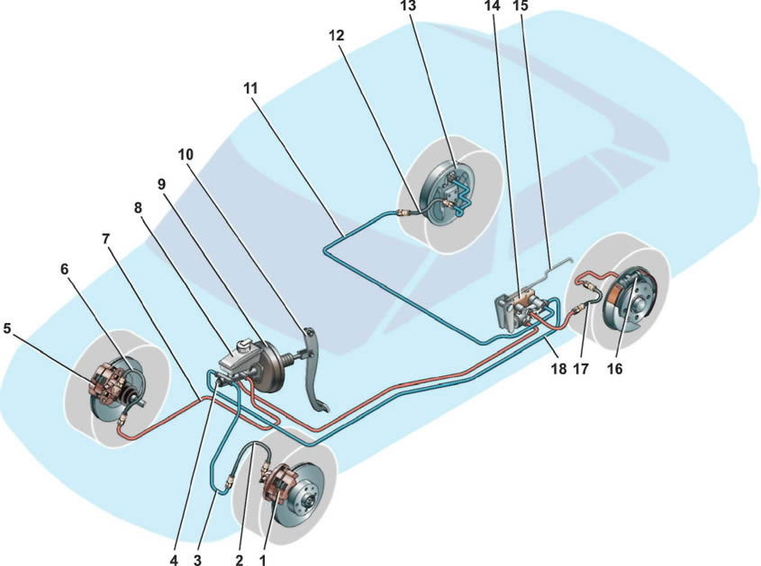

Тормозная система

Рабочая тормозная система: 1 — тормозной механизм переднего левого колеса; 2, 6, 12, 17 — тормозные шланги; 3, 7, 11, 18 — тормозные трубки; 4 — главный тормозной цилиндр; 5 — тормозной механизм переднего правого колеса; 8 — бачок главного тормозного цилиндра; 9 — вак}умный усилитель; 10 — педаль тормоза; 13 — тормозной механизм заднего правого колеса; 14 — регулятор давления жидкости в тормозных механизмах задних колес; 15 — рычаг регулятора давления жидкости в тормозных механизмах задних колес; 16 — тормозной механизм заднего левого колеса Примечание. Часть автомобилей оборудована тормозной системой с АБС (антиблокировочная система).
Основные данные для контроля, регулировки и обслуживания тормозной системы
Тип тормозной жидкости |
DOT 4 |
Заправочный объем гидропривода тормозной системы, л |
0,45 |
Свободный ход педали тормоза, мм |
3-5 |
Количество щелчков храпового устройства стояночного тормоза |
2-4 |
Минимальная толщина фрикционных накладок тормозных колодок переднего тормозного механизма, мм |
1,5 |
Минимальная толщина тормозного диска, мм |
17,8 |
Максимальное биение тормозного диска, мм |
0,15 |
Максимальный диаметр рабочей поверхности тормозного барабана, мм |
201,5 |
Минимальная толщина фрикционных накладок тормозных колодок заднего тормозного механизма, мм |
1.5 |
|
|
Моменты затяжки резьбовых соединений |
Наименование узлов и деталей |
Резьба |
Момент затяжки, Н-м (кгс-м) |
Болты крепления колеса |
М12х1,25 |
65,2-92,6 (6,7-9,5) |
Гайки крепления кронштейна вакуумного усилителя тормозов к кузову |
М8 |
31-38 (3,2-3,9) |
Гайки крепления вакуумного усилителя тормозов к кронштейну |
М10 |
26,5-32,3 (2,7-3,3) |
Гайки крепления главного цилиндра тормозов к вакуумному усилителю |
М10 |
26,5-32,3 (2,7-3,3) |
Наконечник шланга тормозного механизма переднего колеса |
М10x1,25 |
29,4-33,4 (3,0-3,4) |
Болты крепления тормозного механизма переднего колеса к поворотному кулаку |
М10х1,25 |
29,1 -36 (3,0-3,7) |
Болты крепления рабочего цилиндра переднего тормозного механизма к направляющим пальцам |
М8 |
31-38 (3,2-3,9) |
Болты крепления рабочего цилиндра переднего тормозного механизма к суппорту |
М12х1,25 |
95,9-118,4 (9,8-12,1) |
Штуцеры тормозных трубок |
М10 |
14,7-18,2 (1,5-1,9) |
Болт крепления рабочего цилиндра заднего тормозного механизма |
Мб |
3,3-7,7 (0,3-0,8) |
Гайка крепления кронщтейна регулятора давления |
М8 |
10,4-24,2 (1,1-2,5) |
Болт крепления регулятора давления к кронштейну |
М8 |
10,4-24,2 (1,1-2,5) |
|
Автомобиль оборудован двумя тормозными системами — рабочей и стояночной.
Рабочая тормозная система предназначена для снижения скорости движения автомобиля, вплоть до его полной остановки и кратковременного удержания автомобиля в неподвижном состоянии.
Рабочая тормозная система двухконтурная, диагональная, с гадравлическим приводом, состоит из главного тормозного цилиндра с вакуумным усилителем, четырех колесных тормозных механизмов и регулятора давления жидкости в задних тормозных механизмах. Тормозные механизмы передних колес дисковые, невентилируемые, задних — барабанные. |
|
Каждый из контуров автомобиля включает в себя тормозные механизмы двух колес: одного переднего и одного заднего, расположенные на автомобиле по диагонали. В один контур входят тормозные механизмы переднего правого и заднего левого колес, а во второй — тормозные механизмы переднего левого и заднего правого колес. При выходе из строя одного из контуров второй контур, хоть и с меньшей эффективностью, обеспечит остановку автомобиля.
Регулятор давления жидкости ограничивает поступление жидкости в задние тормозные механизмы при недостаточной нагрузке на заднюю ось, тем самым предотвращая блокировку задних колес и занос задней оси автомобиля при резком торможении. В корпусе регулятора имеется контрольное отверстие, закрытое пластмассовой заглушкой. Подтекание жидкости из этого отверстия свидетельствует о негерметичности колеи регулятора.
Для уменьшения усилия, прикладываемого водителем к педали тормоза, в приводе тормозной системы установлен вакуумный усилитель, работающий за счет разрежения, образующегося во впускном трубопроводе работающего двигателя.
Не выключайте двигатель до полной остановки автомобиля.
На корпусе главного тормозного цилиндра установлен бачок с тормозной жидкостью, в крышку бачка встроен датчик недостаточного уровня тормозной жидкости. При опасном падении уровня жидкости в бачке датчик включает контрольную лампу на щитке приборов.
Часть автомобилей оборудована тормозной системой с АБС (антиблокировочная система). |
|